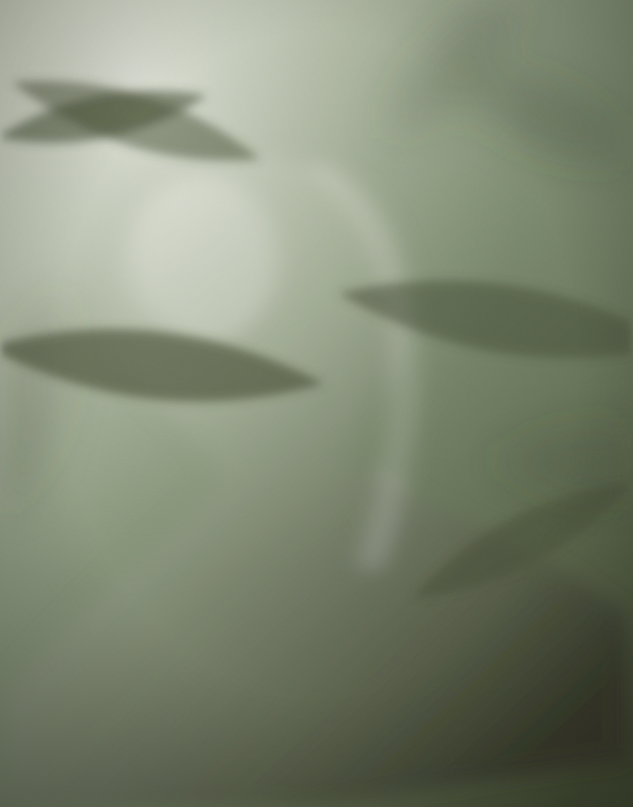
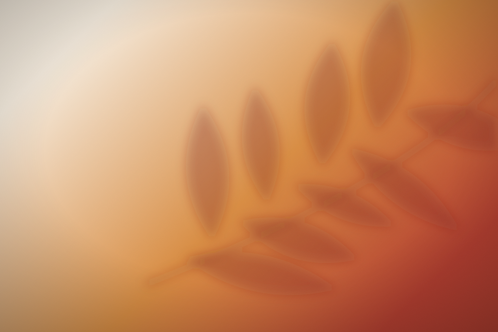

Photography
Macro botanicals, shadow studies, coastline. Natural light only. Series built slowly, over seasons rather than sessions.

About
Photographic artist, digital creator and psychotherapist. Born 1991 in Greve Strand, working from Copenhagen.
I grew up beside Køge Bugt, which means I grew up beside a horizon. That flat line and the light it does at the end of a day is still the thing I am photographing, whether the subject is water or the inside of a poppy.
I studied at Engelsholm Kunsthøjskole, and trained as a psychotherapist at Dansk NLP Center. Since 2018 I have worked for myself in both: sessions with clients, and pictures. People sometimes ask which one is the real job. They are one job. Both are about staying with something long enough that it opens.
The pictures are not staged and not heavily worked. I photograph what is already there — a shadow on a wall, a flower a day past its peak, my own face turned up into the sun — and then I mostly leave it alone.
The two practices
Macro botanicals, shadow studies, coastline. Natural light only. Series built slowly, over seasons rather than sessions.
Psychotherapeutic practice since 2018, trained at Dansk NLP Center. Individual sessions, held in Copenhagen and online.
Guided evenings and women’s circles combining images, eye gazing, mirror meditation and live music.
There’s only one of you — enjoy it. Zenna Lua
Background
A short version. The longer version is in the pictures.

Method
I find a place where light does something once a day, and I go back. Same wall, same stretch of beach, same plant in the same pot. Most days nothing happens. Then one afternoon the wind holds still for four seconds and the picture is there.
Everything is shot on natural light, handheld, close. Colour is corrected but not invented — if a print looks like burnt orange, the wall was burnt orange.